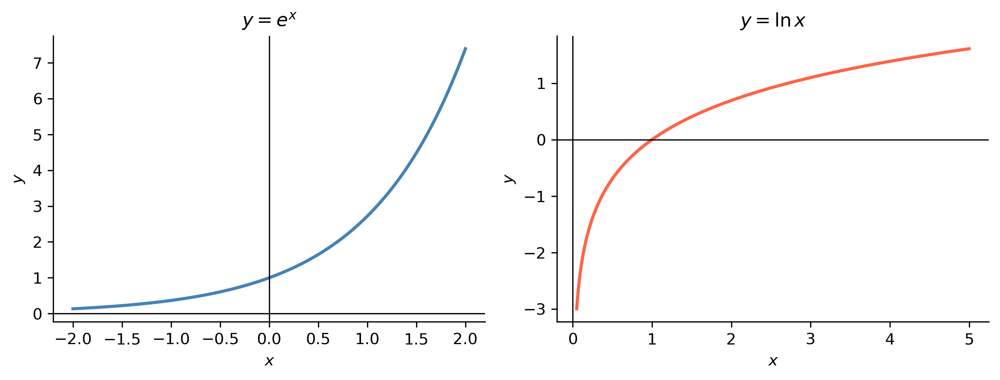
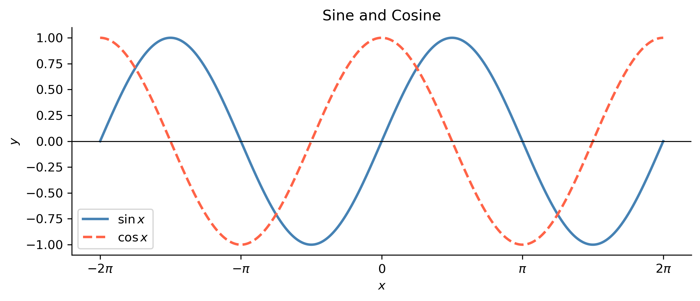
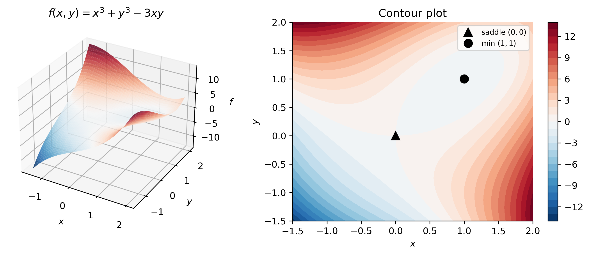

# This is a code cell that imports the necessary libraries for our session.import numpy as np # NumPy for numerical computationsimport scipy as sp # SciPy for scientific computingimport sympy as sym # SymPy for symbolic mathematicsimport matplotlib as mpl # Matplotlib for plottingimport matplotlib.pyplot as plt # Matplotlib pyplot interfacefrom scipy.integrate import solve_ivp # ODE solvermpl.rcParams['figure.dpi'] =150mpl.rcParams['axes.spines.top'] =Falsempl.rcParams['axes.spines.right'] =False
This page summarizes the key calculus concepts and formulas that arise most frequently in MATH 341. A solid command of these topics—derivatives, integrals, and series—is essential for understanding the techniques developed throughout the course. Where appropriate, we also show how SymPy, Python’s symbolic mathematics library, can be used to check and explore these ideas computationally.
Review of Basic Functions
Polynomials and Rational Functions
A polynomial of degree \(n\) is a function of the form
where the coefficients \(a_0, a_1, \ldots, a_n\) are real numbers. Polynomials are defined and continuous on all of \(\mathbb{R}\).
A rational function is a ratio of two polynomials,
\[
r(x) = \frac{p(x)}{q(x)},
\]
defined wherever \(q(x) \neq 0\). Rational functions appear prominently in the method of partial fractions (see Section 3.3) and in Laplace transform computations.
Show the code
# Define a symbolic variablex = sym.Symbol('x')# Define a polynomial and a rational functionp = x**4-3*x**2+2*x -5r = (x**2+1) / (x**2- x -6)print("Polynomial p(x) =", p)print()print("Rational function r(x) =", r)print()# Factor each expressionprint("Factored p(x):", sym.factor(p))print("Factored r(x):", sym.factor(r))print()# Find the roots (zeros) of p(x)roots = sym.solve(p, x)print("Roots of p(x):", roots)
The natural logarithm\(\ln x = \log_e x\) is the inverse of \(e^x\):
\[
\ln(e^x) = x \quad (x \in \mathbb{R}), \qquad e^{\ln x} = x \quad (x > 0).
\]
Important logarithm rules:
\[
\ln(ab) = \ln a + \ln b, \qquad \ln\!\left(\frac{a}{b}\right) = \ln a - \ln b, \qquad \ln(a^r) = r \ln a.
\]
The general exponential \(a^x = e^{x \ln a}\) for \(a > 0\) reduces all exponential functions to the natural base, which is why \(e\) plays a privileged role throughout the course.
Exponential product rule:
exp(a)*exp(b) = exp(a + b) = exp(a+b)? True
Logarithm of a product:
ln(a*b) - (ln(a)+ln(b)) = 0

Trigonometric and Inverse Trigonometric Functions
The six trigonometric functions are defined via the unit circle. The two that arise most often in differential equations are \(\sin x\) and \(\cos x\), which satisfy
\[
\sin^2 x + \cos^2 x = 1
\]
and the derivative relations \(\frac{d}{dx}\sin x = \cos x\) and \(\frac{d}{dx}\cos x = -\sin x\). These make \(\sin\) and \(\cos\) the natural basis of solutions to the equation \(y'' + y = 0\) and, more generally, to any constant-coefficient linear ODE whose characteristic roots are purely imaginary.
Key identities used frequently in this course:
Selected trigonometric identities
Identity
Formula
Pythagorean
\(\sin^2 x + \cos^2 x = 1\)
Double angle (sine)
\(\sin 2x = 2\sin x \cos x\)
Double angle (cosine)
\(\cos 2x = \cos^2 x - \sin^2 x\)
Half-angle (sine)
\(\sin^2 x = \dfrac{1 - \cos 2x}{2}\)
Half-angle (cosine)
\(\cos^2 x = \dfrac{1 + \cos 2x}{2}\)
Sum-to-product
\(\sin(A \pm B) = \sin A \cos B \pm \cos A \sin B\)
Sum-to-product
\(\cos(A \pm B) = \cos A \cos B \mp \sin A \sin B\)
The inverse trigonometric functions\(\arcsin x\), \(\arccos x\), and \(\arctan x\) arise in antiderivatives of algebraic expressions. The most common in this course is
\[
\int \frac{dx}{1 + x^2} = \arctan x + C.
\]
Show the code
x = sym.Symbol('x')# Verify the Pythagorean identity symbolicallyidentity = sym.trigsimp(sym.sin(x)**2+ sym.cos(x)**2)print("sin²(x) + cos²(x) =", identity)# Verify the double-angle formula for sindouble_angle = sym.trigsimp(sym.sin(2*x) -2*sym.sin(x)*sym.cos(x))print("sin(2x) - 2sin(x)cos(x) =", double_angle)# Plot sin and cosxv = np.linspace(-2*np.pi, 2*np.pi, 500)fig, ax = plt.subplots(figsize=(8, 3.5))ax.plot(xv, np.sin(xv), label=r'$\sin x$', color='steelblue', linewidth=2)ax.plot(xv, np.cos(xv), label=r'$\cos x$', color='tomato', linewidth=2, linestyle='--')ax.axhline(0, color='k', linewidth=0.8)ax.set_xticks([-2*np.pi, -np.pi, 0, np.pi, 2*np.pi])ax.set_xticklabels([r'$-2\pi$', r'$-\pi$', r'$0$', r'$\pi$', r'$2\pi$'])ax.set_xlabel('$x$')ax.set_ylabel('$y$')ax.set_title('Sine and Cosine')ax.legend()plt.tight_layout()plt.savefig('trig.png', bbox_inches='tight')plt.show()
sin²(x) + cos²(x) = 1
sin(2x) - 2sin(x)cos(x) = 0

Hyperbolic Functions
The hyperbolic functions are defined in terms of the exponential function:
\[
\cosh x = \frac{e^x + e^{-x}}{2}, \qquad \sinh x = \frac{e^x - e^{-x}}{2}.
\]
They satisfy an identity analogous to the Pythagorean theorem,
\[
\cosh^2 x - \sinh^2 x = 1,
\]
and their derivatives mirror (with a sign change) those of the circular trig functions:
\[
\frac{d}{dx}\sinh x = \cosh x, \qquad \frac{d}{dx}\cosh x = \sinh x.
\]
Hyperbolic functions appear as solutions to the ODE \(y'' - y = 0\) (note the minus sign, versus \(y'' + y = 0\) for circular functions), and arise in problems involving catenary curves, heat conduction, and certain boundary-value problems. The remaining hyperbolic functions are defined analogously: \(\tanh x = \sinh x / \cosh x\), etc.
The fundamental differentiation rules used throughout this course are collected below. Let \(f\) and \(g\) be differentiable functions, and let \(c\) be a constant.
The chain rule is particularly important in differential equations because solutions frequently take the form \(e^{rt}\), \(\sin(\omega t)\), or other composed functions whose derivatives we must compute routinely.
The table below lists the derivatives and corresponding antiderivatives (indefinite integrals) that appear most frequently in MATH 341. In each antiderivative, \(C\) denotes an arbitrary constant of integration.
The classic mnemonic for choosing \(u\) is LIATE: Logarithms, Inverse trig, Algebraic (polynomials), Trigonometric, Exponential — pick \(u\) as the function that appears earliest in this list.
NoteExample
Evaluate \(\displaystyle\int t e^{-t}\,dt\).
Set \(u = t\) and \(dv = e^{-t}\,dt\). Then \(du = dt\) and \(v = -e^{-t}\). Thus
\[
\int t e^{-t}\,dt = -t e^{-t} + \int e^{-t}\,dt = -t e^{-t} - e^{-t} + C = -e^{-t}(t+1) + C.
\]
This type of integral arises naturally when computing inverse Laplace transforms of functions like \(\frac{1}{(s+1)^2}\).
Sometimes integration by parts must be applied twice, or the original integral reappears on the right-hand side and can be solved algebraically (the “loop” trick):
Partial fraction decomposition expresses a proper rational function as a sum of simpler fractions that can be integrated term by term. It is also the primary tool for computing inverse Laplace transforms.
Given \(r(x) = p(x)/q(x)\) with \(\deg p < \deg q\), factor \(q(x)\) over the reals and write:
For each linear factor\((x - a)^k\): \[\frac{A_1}{x-a} + \frac{A_2}{(x-a)^2} + \cdots + \frac{A_k}{(x-a)^k}\]
For each irreducible quadratic factor\((x^2 + bx + c)^k\): \[\frac{B_1 x + C_1}{x^2+bx+c} + \frac{B_2 x + C_2}{(x^2+bx+c)^2} + \cdots\]
NoteExample
Decompose \(\displaystyle\frac{3x + 5}{(x-1)(x+3)}\) into partial fractions.
When \(a = 0\) this is called a Maclaurin series. The series converges to \(f(x)\) on an interval of radius \(R\) (the radius of convergence) centered at \(a\).
The four Maclaurin series used most often in differential equations are:
\[
e^x = \sum_{n=0}^{\infty} \frac{x^n}{n!} = 1 + x + \frac{x^2}{2!} + \frac{x^3}{3!} + \cdots, \quad R = \infty
\]
\[
\sin x = \sum_{n=0}^{\infty} \frac{(-1)^n x^{2n+1}}{(2n+1)!} = x - \frac{x^3}{3!} + \frac{x^5}{5!} - \cdots, \quad R = \infty
\]
\[
\cos x = \sum_{n=0}^{\infty} \frac{(-1)^n x^{2n}}{(2n)!} = 1 - \frac{x^2}{2!} + \frac{x^4}{4!} - \cdots, \quad R = \infty
\]
Arc length. The length of the curve from \(t = a\) to \(t = b\) is
\[
L = \int_a^b \sqrt{\left(\frac{dx}{dt}\right)^2 + \left(\frac{dy}{dt}\right)^2}\,dt.
\]
Parametric curves are most relevant in MATH 341 when we study systems of differential equations, where the solution \((x(t), y(t))\) is a curve in the phase plane. Plotting these trajectories is a central tool for understanding the long-time behavior of a system.
Similarly, \(F_y = \partial F / \partial y\) treats \(x\) as a constant. Higher-order partial derivatives are computed iteratively. For functions with continuous second-order partials, Clairaut’s theorem guarantees symmetry:
\[
F_{xy} = \frac{\partial^2 F}{\partial y \partial x} = \frac{\partial^2 F}{\partial x \partial y} = F_{yx}.
\]
Exactness. Partial derivatives play a central role in exact differential equations. An expression \(M(x,y)\,dx + N(x,y)\,dy\) is an exact differential if and only if
In that case there exists a potential function \(F(x,y)\) such that \(F_x = M\) and \(F_y = N\), and the general solution is \(F(x,y) = C\).
The total derivative. If \(y = y(x)\) is implicitly a function of \(x\) through a relation \(F(x,y) = C\), then differentiating with respect to \(x\) gives
Optimization is the problem of finding the input values that minimize or maximize a given function. In a first course on ODEs the topic arises naturally in several places: equilibrium analysis (where we ask whether a steady state is stable), parameter estimation (fitting a model to data by minimizing a residual), and certain boundary-value problems derived from variational principles. This section reviews the essential ideas for both single- and multi-variable settings and shows how to carry out computations with SymPy and SciPy.
Single-Variable Optimization
Given a differentiable function \(f : \mathbb{R} \to \mathbb{R}\), a point \(x^*\) is a critical point if \(f'(x^*) = 0\) or \(f'\) does not exist there. The second derivative test then classifies the critical point:
A global (absolute) extremum on a closed interval \([a, b]\) is found by evaluating \(f\) at every critical point in \((a,b)\) and at the endpoints \(a\), \(b\), then comparing.
NoteExample
Find and classify the critical points of \(f(x) = x^3 - 3x^2 - 9x + 5\).
For optimization problems where a closed-form solution is unavailable, scipy.optimize.minimize_scalar finds a local minimum numerically over an interval.
evaluated at the critical point. The second-order test uses the determinant \(D = f_{xx}f_{yy} - f_{xy}^2\):
Second-order test for functions of two variables
Condition
Conclusion
\(D > 0\) and \(f_{xx} > 0\)
local minimum
\(D > 0\) and \(f_{xx} < 0\)
local maximum
\(D < 0\)
saddle point
\(D = 0\)
inconclusive
NoteExample
Classify the critical points of \(f(x,y) = x^3 + y^3 - 3xy\).
Setting \(f_x = 3x^2 - 3y = 0\) and \(f_y = 3y^2 - 3x = 0\) gives \(y = x^2\) and \(x = y^2\), yielding critical points \((0,0)\) and \((1,1)\).
At \((1,1)\): \(f_{xx} = 6\), \(f_{yy} = 6\), \(f_{xy} = -3\), so \(D = 36 - 9 = 27 > 0\) and \(f_{xx} > 0\) — a local minimum.
At \((0,0)\): \(f_{xx} = 0\), \(f_{yy} = 0\), \(f_{xy} = -3\), so \(D = -9 < 0\) — a saddle point.
Show the code
x, y = sym.symbols('x y')f2 = x**3+ y**3-3*x*y# Gradient and Hessiangrad = [sym.diff(f2, v) for v in (x, y)]H = sym.hessian(f2, (x, y))print("f(x,y) =", f2)print("∇f =", grad)print()# Critical points — keep only real solutionscrits2_all = sym.solve(grad, [x, y])crits2 = [pt for pt in crits2_all ifall(v.is_real for v in pt)]print("All critical points:", crits2_all)print("Real critical points:", crits2)print()for pt in crits2: H_val = H.subs([(x, pt[0]), (y, pt[1])]) D =float(H_val.det()) # cast to Python float for boolean comparisons fxx =float(H_val[0, 0]) fval = f2.subs([(x, pt[0]), (y, pt[1])])if D >0and fxx >0: kind ="local min"elif D >0and fxx <0: kind ="local max"elif D <0: kind ="saddle point"else: kind ="inconclusive"print(f" ({pt[0]}, {pt[1]}): f = {fval}, D = {D}, f_xx = {fxx} -> {kind}")# Surface and contour plotfrom mpl_toolkits.mplot3d import Axes3D # noqa: F401xv = np.linspace(-1.5, 2, 200)yv = np.linspace(-1.5, 2, 200)Xg, Yg = np.meshgrid(xv, yv)Zg = Xg**3+ Yg**3-3*Xg*Ygfig = plt.figure(figsize=(10, 4))ax1 = fig.add_subplot(1, 2, 1, projection='3d')ax1.plot_surface(Xg, Yg, Zg, cmap='RdBu_r', alpha=0.85, linewidth=0)ax1.set_xlabel('$x$'); ax1.set_ylabel('$y$'); ax1.set_zlabel('$f$')ax1.set_title(r'$f(x,y)=x^3+y^3-3xy$')ax2 = fig.add_subplot(1, 2, 2)cs = ax2.contourf(Xg, Yg, Zg, levels=30, cmap='RdBu_r')plt.colorbar(cs, ax=ax2)ax2.plot(0, 0, 'k^', markersize=9, label='saddle $(0,0)$')ax2.plot(1, 1, 'ko', markersize=9, label='min $(1,1)$')ax2.set_xlabel('$x$'); ax2.set_ylabel('$y$')ax2.set_title('Contour plot')ax2.legend(fontsize=8)plt.tight_layout()plt.savefig('opt_2d.png', bbox_inches='tight')plt.show()
f(x,y) = x**3 - 3*x*y + y**3
∇f = [3*x**2 - 3*y, -3*x + 3*y**2]
All critical points: [(0, 0), (1, 1), ((-1/2 - sqrt(3)*I/2)**2, -1/2 - sqrt(3)*I/2), ((-1/2 + sqrt(3)*I/2)**2, -1/2 + sqrt(3)*I/2)]
Real critical points: [(0, 0), (1, 1)]
(0, 0): f = 0, D = -9.0, f_xx = 0.0 -> saddle point
(1, 1): f = -1, D = 27.0, f_xx = 6.0 -> local min

For numerical multi-variable optimization, scipy.optimize.minimize provides a range of gradient-based methods. The default BFGS method is a quasi-Newton scheme that builds up an approximation to the Hessian iteratively and is well-suited to smooth unconstrained problems.
Show the code
from scipy.optimize import minimizedef f2_num(v):return v[0]**3+ v[1]**3-3*v[0]*v[1]# Start near the known local min at (1, 1)x0 = np.array([0.5, 0.5])res = minimize(f2_num, x0, method='BFGS')print("scipy.optimize.minimize (BFGS) near (0.5, 0.5):")print(f" x* ≈ {res.x}")print(f" f(x*) ≈ {res.fun:.6f}")print(f" Success: {res.success}")print(f" Message: {res.message}")
Many SciPy minimizers accept analytic jac (Jacobian/gradient) and hess (Hessian) arguments, which can dramatically improve both speed and accuracy. SymPy’s lambdify is a convenient way to convert a symbolic expression to a fast numerical function suitable for these arguments.
Root Finding
Root finding means solving the equation \(f(x) = 0\) (or a system \(\mathbf{F}(\mathbf{x}) = \mathbf{0}\)) when no closed-form solution exists. In the ODE context this arises when locating equilibrium points of autonomous systems, finding eigenvalues numerically, or solving implicit algebraic equations that appear as boundary conditions.
Newton’s Method (Single Variable)
Given a smooth function \(f\) and a starting guess \(x_0\), Newton’s method generates the sequence
Geometrically, each step replaces the curve \(y = f(x)\) by its tangent line at \((x_n, f(x_n))\) and takes the tangent’s zero as the next iterate. When \(x_0\) is close to a simple root \(x^*\) and \(f'(x^*) \neq 0\), the method converges quadratically: the number of correct decimal places roughly doubles each iteration.
NoteExample
Find the positive root of \(f(x) = x^3 - 2\) (i.e. \(\sqrt[3]{2}\)) starting from \(x_0 = 1\).
\(f'(x) = 3x^2\), so the iteration is \(x_{n+1} = x_n - (x_n^3 - 2)/(3x_n^2)\).
Show the code
# Manual Newton's method implementationdef newton(f_func, df_func, x0, tol=1e-10, max_iter=50):"""Return (root, iterations, history).""" x = x0 history = [x]for i inrange(max_iter): fx = f_func(x) dfx = df_func(x)ifabs(dfx) <1e-15:raiseValueError("Derivative too small; Newton's method failed.") x_new = x - fx / dfx history.append(x_new)ifabs(x_new - x) < tol:return x_new, i +1, history x = x_newraiseValueError(f"Did not converge in {max_iter} iterations.")f_cube =lambda xv: xv**3-2df_cube =lambda xv: 3* xv**2root, iters, hist = newton(f_cube, df_cube, x0=1.0)print(f"Root ≈ {root:.15f}")print(f"2^(1/3) = {2**(1/3):.15f}")print(f"Converged in {iters} iterations")print()print(f"{'Iter':>5}{'x_n':>20}{'|f(x_n)|':>15}{'error':>15}")print("-"*60)true_root =2**(1/3)for k, xk inenumerate(hist):print(f"{k:>5}{xk:>20.12f}{abs(f_cube(xk)):>15.3e}{abs(xk - true_root):>15.3e}")
The quadratic convergence is visible in the error column: the number of significant digits approximately doubles each step. SciPy’s newton function in scipy.optimize provides a robust, production-quality implementation that also handles the secant method (when no derivative is supplied) and Halley’s method (when the second derivative is supplied).
Show the code
from scipy.optimize import newton as sp_newton# Using scipy's newton (with analytic derivative → true Newton's method)root_scipy = sp_newton(f_cube, x0=1.0, fprime=df_cube, full_output=True)print("scipy newton result:", root_scipy[0])# Without fprime → secant methodroot_secant = sp_newton(f_cube, x0=1.0, full_output=True)print("scipy secant result:", root_secant[0])# Visualize the first few Newton iteratesxv = np.linspace(0.5, 2.2, 400)fig, ax = plt.subplots(figsize=(7, 4.5))ax.plot(xv, f_cube(xv), color='steelblue', linewidth=2, label=r'$f(x)=x^3-2$')ax.axhline(0, color='k', linewidth=0.8)colors_n = plt.cm.autumn(np.linspace(0.1, 0.9, len(hist) -1))for k inrange(min(4, len(hist) -1)): xk = hist[k] fxk = f_cube(xk) dfxk = df_cube(xk) x_tang = np.linspace(xk -0.6, xk +0.6, 50) ax.plot(x_tang, fxk + dfxk * (x_tang - xk), color=colors_n[k], linewidth=1.4, linestyle='--', label=f'tangent at $x_{k}={xk:.3f}$') ax.plot(xk, fxk, 'o', color=colors_n[k], markersize=7)ax.plot(root, 0, 'k*', markersize=12, zorder=6, label=f'root $\\approx {root:.4f}$')ax.set_xlabel('$x$')ax.set_ylabel('$f(x)$')ax.set_title("Newton's Method Iterates for $x^3 - 2 = 0$")ax.legend(fontsize=8)plt.tight_layout()plt.savefig('newton_1d.png', bbox_inches='tight')plt.show()
scipy newton result: 1.2599210498948732
scipy secant result: 1.2599210498947795
Convergence and Limitations
Newton’s method can fail when:
The starting guess is far from a root, causing the iterates to diverge or cycle.
\(f'(x_n) \approx 0\) near an iterate (near a local extremum), making the step size enormous.
The root has multiplicity greater than one (convergence degrades from quadratic to linear).
The secant method avoids computing \(f'\) by approximating it with a finite difference:
It converges super-linearly (order \(\approx 1.618\), the golden ratio), slightly slower than Newton but requiring only function evaluations. For bracketing problems — where a sign change is known — Brent’s method (scipy.optimize.brentq) combines bisection, secant, and inverse quadratic interpolation to guarantee convergence and is often the safest general-purpose choice.
Show the code
from scipy.optimize import brentq# brentq requires a bracket [a, b] with f(a) and f(b) of opposite signroot_brent = brentq(f_cube, 1.0, 2.0, full_output=True)print(f"brentq result: root ≈ {root_brent[0]:.15f}")print(f"Function evaluations: {root_brent[1].function_calls}")
brentq result: root ≈ 1.259921049894854
Function evaluations: 9
Newton’s Method for Systems (Multi-Variable)
For a system \(\mathbf{F}(\mathbf{x}) = \mathbf{0}\) with \(\mathbf{F} : \mathbb{R}^n \to \mathbb{R}^n\), Newton’s method generalises to
where \(J_F\) is the Jacobian matrix with \((i,j)\) entry \(\partial F_i / \partial x_j\). In practice we never invert \(J_F\) explicitly; instead we solve the linear system
at each step. This requires one LU factorisation per iteration (cost \(O(n^3)\)), and the method again converges quadratically when started sufficiently close to a simple root.
NoteExample
Find the intersection of the circle \(x^2 + y^2 = 4\) and the hyperbola \(xy = 1\) in the first quadrant.
Define \(F_1(x,y) = x^2 + y^2 - 4\) and \(F_2(x,y) = xy - 1\). The Jacobian is
\[
J_F = \begin{pmatrix} 2x & 2y \\ y & x \end{pmatrix}.
\]
For production use, scipy.optimize.fsolve (a wrapper around MINPACK’s hybrd) and scipy.optimize.root implement Newton-like and Krylov-based methods for nonlinear systems and handle many edge cases automatically.
For a single equation with a known bracket use brentq — it is guaranteed to converge. When no bracket is available and a derivative is cheap to evaluate, newton with fprime is fastest. For systems, fsolve or root with an analytic Jacobian is preferred; if the Jacobian is expensive, finite-difference approximations (the default when fprime / jac is omitted) are acceptable but less accurate.
Relevant Videos
Derivatives:
Integration by Parts: https://youtu.be/sWSLLO3DS1I?si=UMqZqZ80XSKaGJ8d
Partial Fractions:
Taylor Series:
Euler’s Formula:
Parametric Curves:
References
TipExpand for Session Info
Show the code
import sys # sys for system-specific parameters and functionsprint("Python version:", sys.version)print('\n'.join(f'{m.__name__}=={m.__version__}'for m inglobals().values() ifgetattr(m, '__version__', None)))